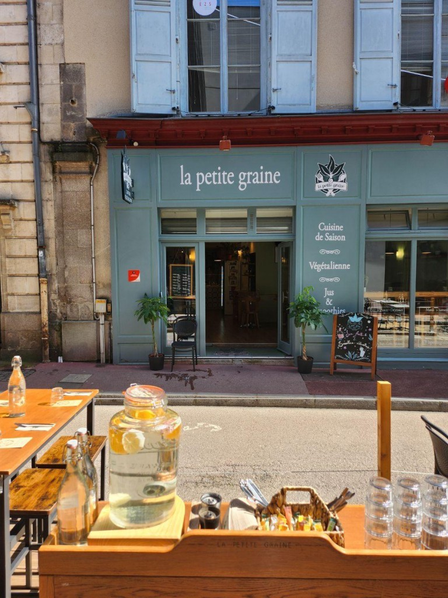
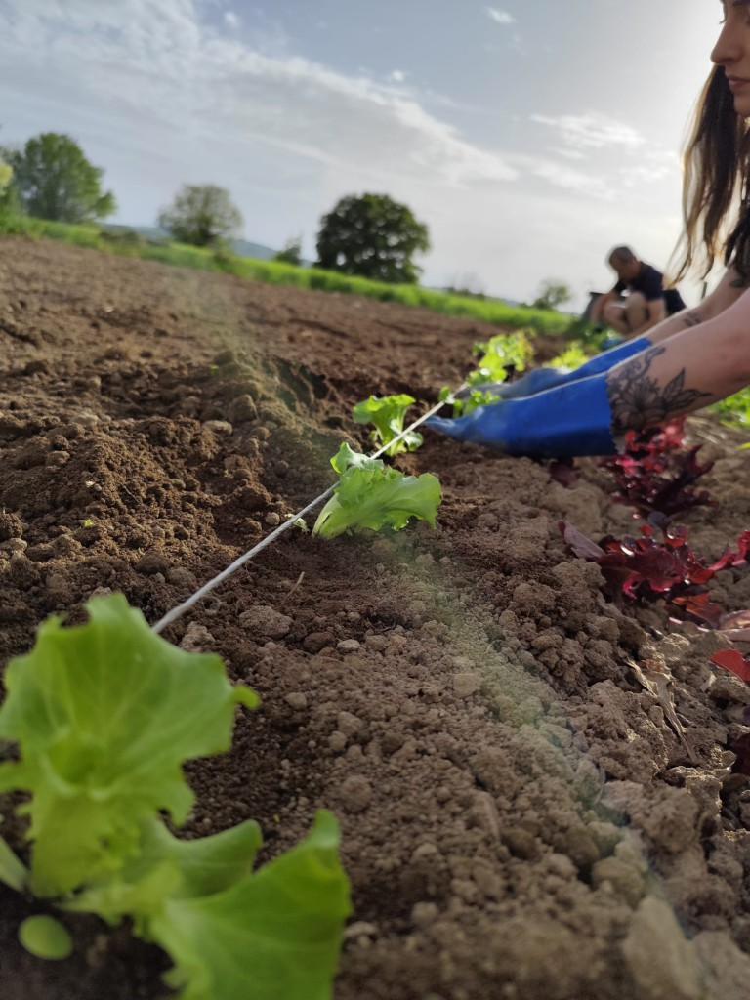
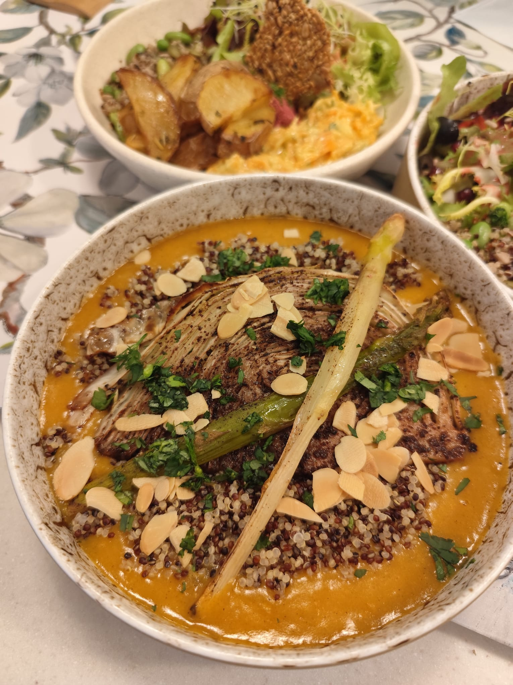

Bienvenue chez La Petite Graine
Cantine végétalienne — fait maison & sans gluten
Voir le menu

Notre devanture à Limoges

Des produits cultivés avec soin

Des plats faits maison, gourmands & végétaliens
Plat du jour
Vendredi 20 Juin
Risotto de sarrasin crémeux aux épinards & tomates séchées
Oignons rouges, poivrons, fèves de soja
Parmesan de cajou, cébette & ciboulette
Horaires d'ouverture
Mardi à Vendredi :10h – 18h
Samedi :10h – 19h
Dimanche & Lundi :Fermé
Déjeuner :12h – 14h30
Sans réservation
📢 Ouvert en continu le Samedi 21 Juin (Midi & Soir)
Où nous trouver
2 Rue Dalesme
87000 Limoges
France
Coordonnées GPS :
45.8329659, 1.2574724